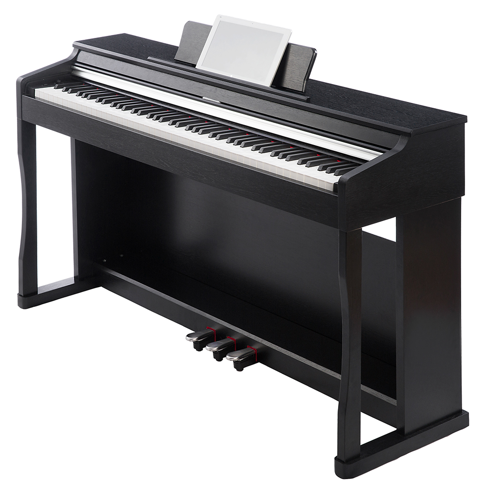
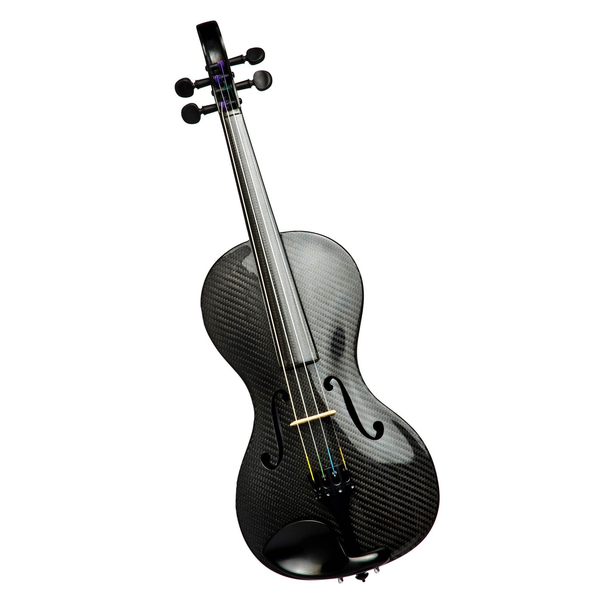

Улучшите свой звук
Вы готовы выйти на новый уровень, и мы вам поможем. Последние годы ставят задачи, требующие большой целеустремленности и терпения от всех артистов и творческих людей. Во всём мире сейчас вновь открываются концертные залы и зрители снова могут собираться вместе, поэтому давайте созвадим революционное звучание и позволим слушателям окунуться в магию звука.
Новинки
Ongaku Dual
 Для настоящих хардкорщиков. После концерта можно разбить одну гитару из двух!
Для настоящих хардкорщиков. После концерта можно разбить одну гитару из двух!
Ongaku Galaxy

Электронное пианино для настоящих меломанов, на нём идеально звучит как классическая музыка, так и электронная: сыграйте концерт из Бетховена, Даниэла Розенфельда и PAIN.
Ongaku Black Night

Если стиль - Ваше второе я, поразите слушателей как идеальным звуком, так и красотой инструмента.